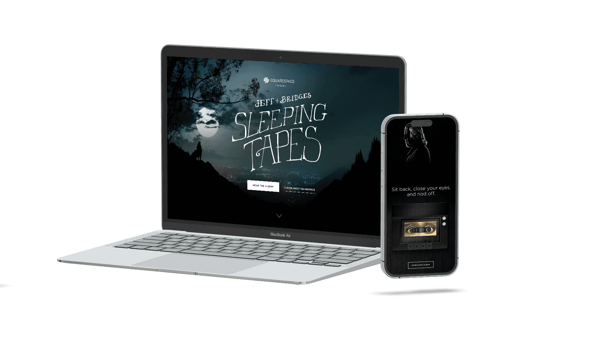
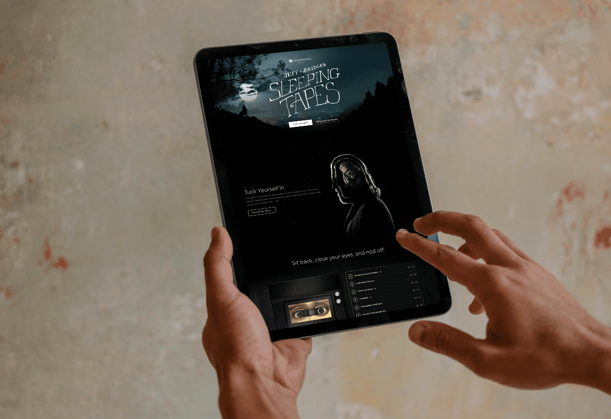
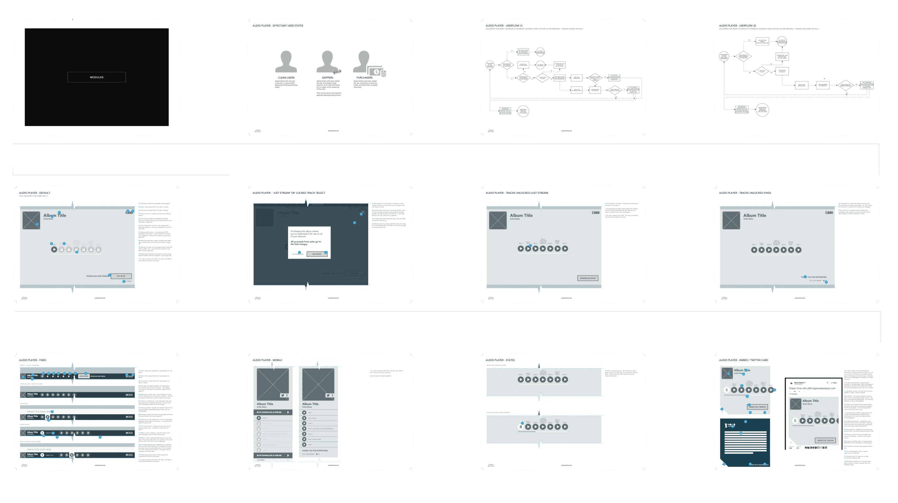

Squarespace × W+K · 2014–15 · UX Lead · Super Bowl Campaign
With Wieden+Kennedy and Jeff Bridges, I turned a Super Bowl ad into an immersive, donation-driven experience for No Kid Hungry — a soulful storefront converting massive traffic into meaningful impact.

I aligned stakeholders around the campaign's goals, then translated the creative vision into wireframes and flows prioritizing clarity, emotional tone, and ease of donation — mapping user journeys across the multiple entry points of a Super Bowl moment.

As part of the project, I led UX for Squarespace's first integrated audio player — an intuitive, elegant interface supporting seamless listening within the platform's design standards and creator flexibility.

A Super Bowl moment transformed into real-world impact — story-driven commerce in service of care.